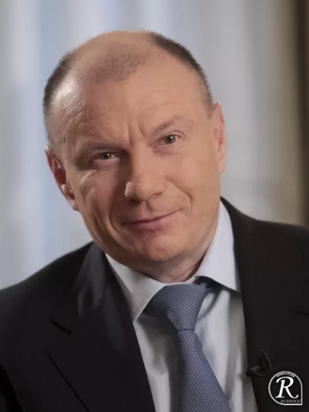

За семь лет страна, в которой вся крупная промышленность принадлежала государству, превратилась в страну с преобладанием частного сектора. Цена этой трансформации до сих пор остаётся предметом споров.
К концу 1991 года экономика СССР находилась в состоянии клинической смерти. Полки магазинов опустели — карточная система не справлялась с распределением. Валютных резервов государства не хватало даже на закупку зерна. По стране катилась гиперинфляция: только за 1992 год цены выросли в 26 раз.
Командно-административная система больше не работала. Закон о госпредприятии 1987 года и Закон о кооперации 1988-го лишь ускорили развал: безналичные деньги массово переводились в наличные, кооперативы при заводах перекачивали государственное сырьё на свободный рынок.
В этих условиях правительство Егора Гайдара сделало ставку на «шоковую терапию». Главным её инструментом стала приватизация — самая масштабная передача собственности в новейшей истории человечества.
Ключевые точки приватизационных реформ — от первого закона до последнего залогового аукциона.
«Мы знали, что каждый проданный завод — это гвоздь в крышку гроба коммунизма». Чубайс обещал, что за ваучер можно будет купить два автомобиля. Реальность оказалась другой.
Идея ваучерной приватизации пришла из советских времён: ещё в 1980-х её предложил экономист Виталий Найшуль, работавший в Госплане СССР. Но когда в начале 1990-х схему попытались реализовать, сам Найшуль выступил против.
«Для неё нужно мощное государство, которое может перераспределять имущество, — пояснял он. — В 1981 году, когда я предложил ваучеры, такое государство ещё существовало, в 90-х годах его точно не было».
Расчёт стоимости ваучера был такой: суммарные активы 250 тыс. российских госпредприятий правительство оценило в 4 трлн рублей. 35% из них планировали распределить поровну между гражданами. На 148 миллионов человек — по 10 000 рублей.
На бумаге звучало солидно. В реальности уже к середине 1993 года 10 000 рублей — это была цена пары пачек сигарет. Гиперинфляция съела номинал ещё до того, как ваучеры дошли до людей.
К концу 1995 года, под угрозой коммунистического реванша на ближайших выборах, государство передало крупнейшие сырьевые компании страны узкому кругу банков. Залог так и не был возвращён.
| Компания | Доля | Победитель | Цена |
|---|---|---|---|
| «Норильский никель» | 38% | ОНЭКСИМ-банк / В. Потанин | 170 млн $ |
| «ЮКОС» | 45% | «Менатеп» / М. Ходорковский | 159 млн $ |
| «Сибнефть» | 51% | Б. Березовский / Р. Абрамович | 100 млн $ |
| «Сургутнефтегаз» | 40% | «Сургутнефтегаз» (сам себя) | 88 млн $ |
| «Лукойл» | 5% | «Империал» / «Лукойл» | 35 млн $ |
Схема была простой и почти неприкрытой. Государство получало от банков кредиты под залог пакетов акций сырьевых гигантов. Деньги шли на покрытие бюджетного дефицита. В бюджете 1996 года средств на возврат кредитов не предусматривалось. Все участники понимали: через год-два залогодержатели станут собственниками.
Так и случилось. К концу 1990-х структура российской экономики приобрела узнаваемый контур: узкий круг финансово-промышленных групп, тесно связанных с властью, контролирующих ключевые активы. Эта модель сохраняется до сих пор.
Четверо людей, которые получили на залоговых аукционах самые крупные куски бывшей советской экономики. У каждого — своя судьба.

Три цифры, которые лучше всего передают происходившее в стране: годовая инфляция, реальный ВВП и доля государства в экономике.
Прямые цитаты людей, которые делали приватизацию — и тех, кто её оценивал постфактум.
Мы знали, что каждый проданный завод — это гвоздь в крышку гроба коммунизма. Дорого ли, дёшево, бесплатно, с приплатой — двадцатый вопрос!
В условиях слабой власти случилось то, что и должно было случиться: кто на чём сидел, тот то и получил.
Позднее сам Гайдар признавал, что основными социальными группами, которые резко разбогатели, оказались часть чиновников, директорский корпус, директора кооперативов при госпредприятиях и «комсомольский бизнес».
От ваучерной приватизации выиграли так называемые красные директора и партийные функционеры. Постепенно фактическими бенефициарами стали крупные финансово-промышленные группы.
Введи количество ваучеров (у каждого гражданина был один) и выбери, как ты собирался ими распорядиться в 1993 году. Калькулятор покажет, сколько ты получил в реальности — и сколько это в пересчёте на сегодняшние деньги.
Приватизация 1990-х выполнила свою главную политическую задачу — окончательно сломала советскую систему государственной собственности и запустила рыночную экономику. К 1999 году около 75% ВВП производилось в частном секторе.
Но сделала это таким способом, который на десятилетия определил недоверие большей части общества к крупному бизнесу и к самим рыночным реформам. Россия по уровню развития экономики оказалась отброшена к показателям 1975 года; по оценкам ряда исследователей, страна потеряла около 1,5 трлн долларов потенциального ВВП.
Вместо широкого класса собственников сформировалась олигархическая модель, ориентированная на извлечение ренты из сырьевых активов. Эта структура в основных чертах сохраняется до сих пор.
Нормативные акты, мемуары участников и работы исследователей, на которые опирается этот проект.